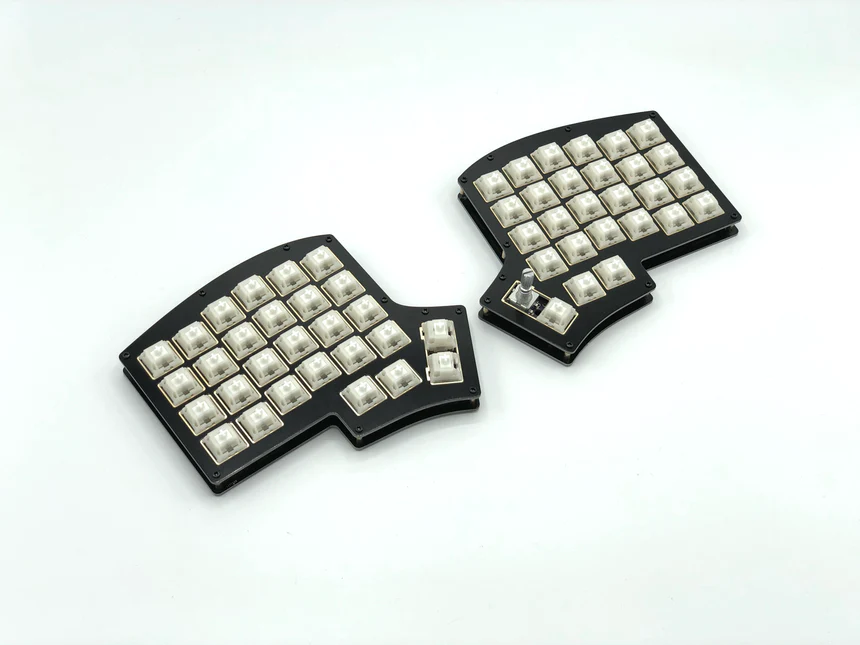
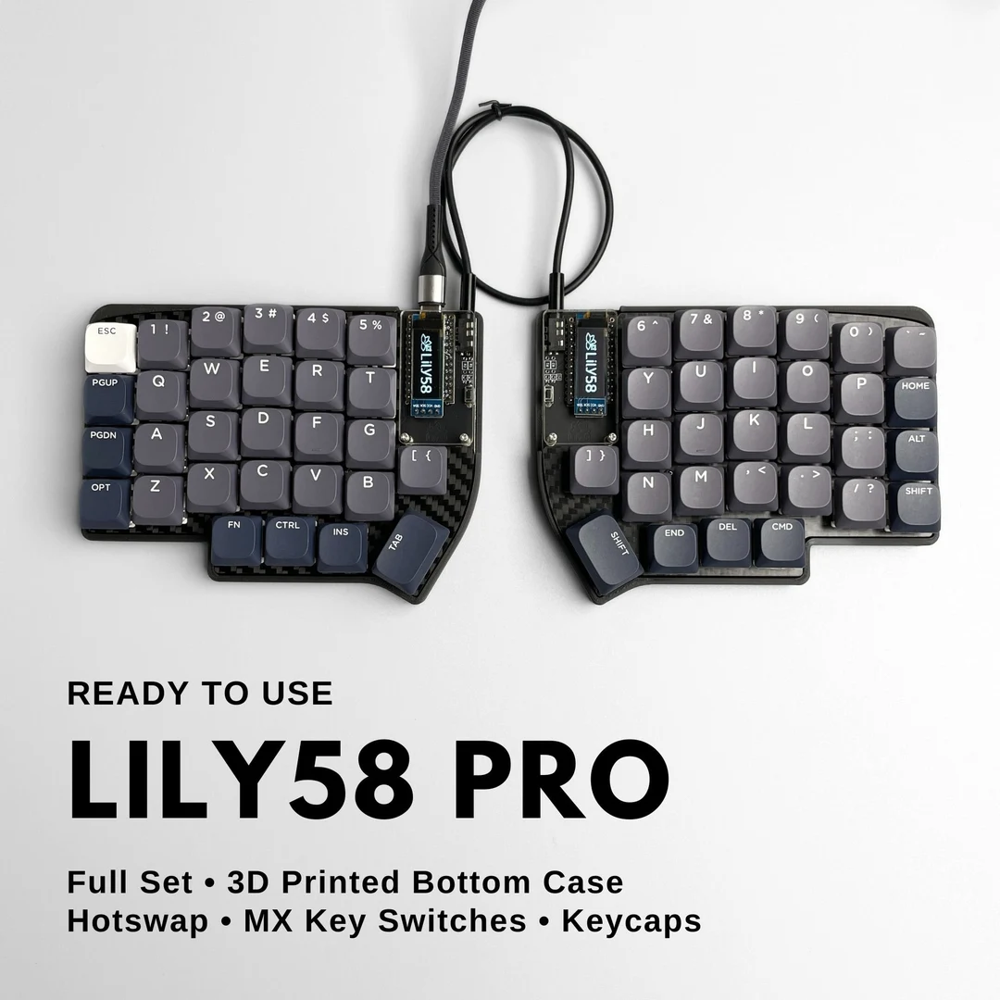
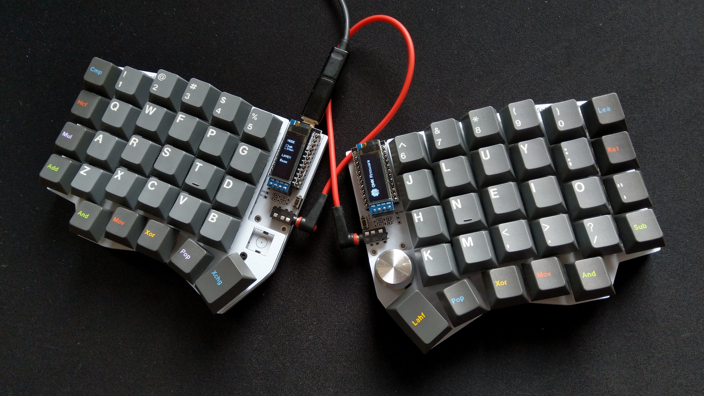
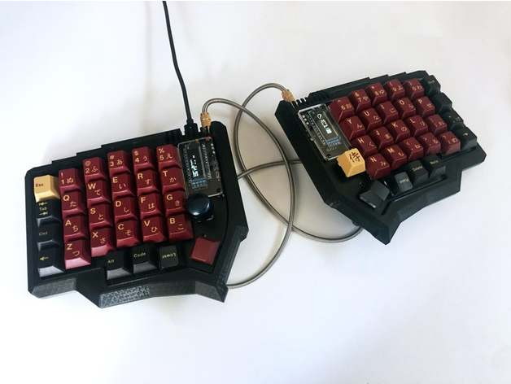
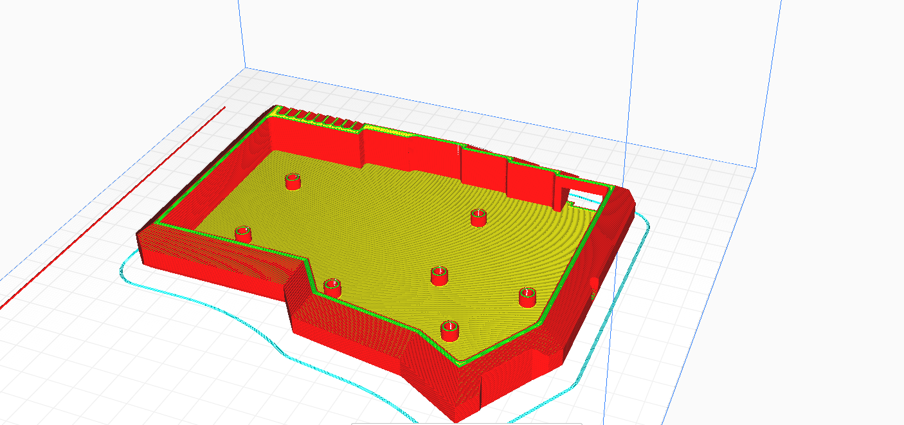
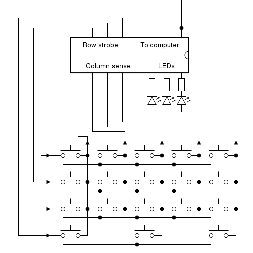

Diseñe y programe un teclado, ademas que lo imprimi. El teclado del el cual me base fue el lily58, pues ya que este se me hizo interesante y habia archivos
disponibles para poder imprimirlo.


Para poder hacerlo necesite comprar unos botones mecanicos, pues estos son los que dan la flexibilidad de poder usarlos en cualquier poscicion y de cualquier manera,
tambien necesite unos arduino pro-micro, estos en especificos pues su microprocesador a diferencia de otros arduino a excepcion del
Leonardo ya tiene incluida
la capacidad de ser leido como un periferico por las computadoras solo con el uso de unas librerias, pero el
Leonardo es demasiado grande y costoso, pues se
van a necesitar dos de estos elementos, uno para cada mitad del teclado
Y finalmente use unas pantallas Oled que se pueden comunicar con arduino por el protocolo i2c, usar estas fue un error, pues aunque ya hay diseños con otras pantallas,
usar las que yo tenia hizo que rediseñara el modelo 3d y la programacion para poder usarlas correctamente, especificamente el modelo que yo ya tenia era el
SSD1306 de
128x64 y el requerido era el de
128x32

Primero el modelo fue una modificacion de
este archivo:

Ademas de que este contenia espacio para los rotadores que era algo que me interesaba usar en un teclado, finalmente el resultado fue el siguiente:

Ya no poseo el archivo stl original pero logre encontrar el archivo Gcode, luego diseñe la tapa de este teclado pero igualmente perdi el archivo, pero este tenia
la diferencia de la pantalla.
Luego las conecciones que hice entre las teclas fueron las siguientes:

en donde cada columna y fila tiene un diodo, esto es para evitar el efecto de ghosting, el cual consiste en que cuando varias teclas en el teclado son presionadas al
mismo tiempo el teclado detecta tambien que otras teclas estan siendo presionadas, cuales teclas producen este efecto depende de las conecciones de cada teclado.
Y finalmente en la programacion del arduino use una libreria que rescate de uno de los ejemplos, parece ser que el creador la uso para su propio diseño, el cual incorppraba
animaciones y efectos muy interesantes, yo la use para mostrar una barra mostrando el porcentaje del brillo y del volumen el cual habia enviado el teclado, en ese momento
no sabia si era posible recibir esta informacion desde la computadora, asi que solo tomaba en cuanta la del teclado.